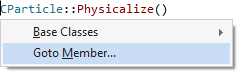
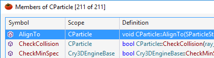

Goto Member
Use Goto Member to browse members of a class or other data structure. Access Goto Member via the menu produced by Goto Related (Shift+Alt+G), VAssistX | Goto Member, or shortcut assigned to VAssistX.GotoMember.

The Goto Member dialog supports filtering, copying of symbol names, and jumping to definitions.
